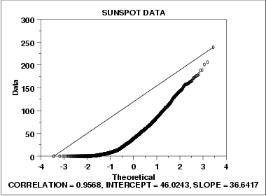

|
1.
Exploratory Data Analysis
1.3. EDA Techniques 1.3.3. Graphical Techniques: Alphabetic 1.3.3.21. Normal Probability Plot
|
|||
| Normal Probability Plot for Data that are Skewed Right |  | ||
| Conclusions |
We can make the following conclusions from the above plot.
|
||
| Discussion |
This quadratic pattern in the normal probability plot
is the signature of a significantly right-skewed data set.
Similarly, if all the points on the normal probability plot fell
above the reference line connecting the first and last points, that
would be the signature pattern for a significantly left-skewed data
set.
In this case we can quite reasonably conclude that we need to model these data with a right skewed distribution such as the Weibull or lognormal. |
||